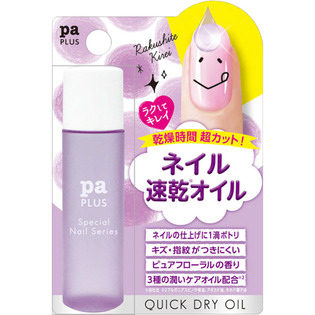

返回列表
产品名称：プラス クイックドライオイル

ディアローラ プラス クイックドライオイル ９ｍｌ
メーカー ディアローラ
JANコード 4511692152619
商品の特徴
ネイルの後に１滴落とすだけで、ネイルを速く乾かして、潤いケアもできるネイルオイルです。ピュアフローラルの香りつきです。
成分・分量
【成分】
シクロペンタシロキサン、ジメチコン、フェニルトリメチコン、アルガニアスピノサ核油、酢酸トコフェロール、アボカド油、ホホバ種子油、香料
用法及び用量
【使用方法】
トップコートを塗り終えてすぐ、爪に１滴たらします。
爪まわりに残ったオイルは指先になじませてください。
トップコートを使わない場合は、ネイルカラーの後にご使用ください。